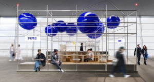
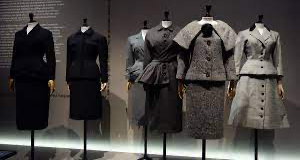
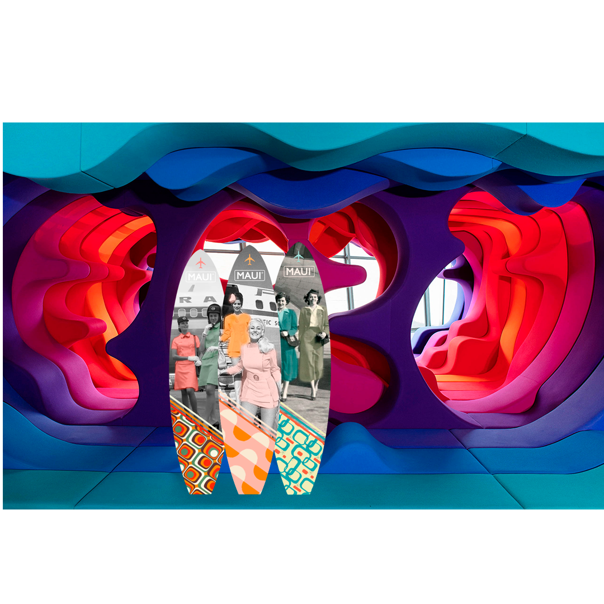

SWISSDESIGNFAIR 2023
SwissDesignFair, le plus grand événement product &
interior design de suisse romande, revient du 06 au 11 juin 2023
!
La thématique de cette 25ème édition s’oriente vers le
design vintage fifties, sixties et seventies.

EXPOSANTS
Le SwissDesignFair a été créé en 1995 pour mettre en
valeur et promouvoir design et l’architecture d’intérieur
suisses.
La créativité formelle et ingénieurale des produits
, la qualité des matériaux et la finesse des réalisations en font un
Salon à la renommée mondiale.
Durant six jours, le SwissDesignFair accueille des grandes marques, des industriels, des éditeurs de meubles et des créateurs indépendants.
- 6 jours
- 150 exposants
- 280 marques
- 1 portrait -¬¬ rétrospective
- 1 exposition thématique.

2023 SPECIAL - GEORGETTE RENAL
Georgette Renala fait ses débuts chez Callot, puis
chez Jenny, Béchoff et Agnès. En 1927 elle rentre chez Chanel puis chez
Premet, où elle sera directrice jusqu'en 1932, avant de fonder sa
propre Maison de Couture.
En 1948, elle est sélectionnée par les
hôtesses d’Air France pour confectionner leurs
uniformes. Georgette Renal prévoit alors une garde-robe de vêtements
classiques : tailleurs, robes pour l’été et manteaux. La même année
elle est élue vice-présidente de la Chambre Syndicale. Sa Maison est
établie 6 Avenue Franklin Roosevelt jusqu'en 1957, puis 17 avenue
Pierre 1° de Serbie jusqu'en 1966.
SwissDesignFair vous propose uneimmersion exclusive dans la carrière de cette grande femme, au travers d’une exposition exclusive vous présentant :
- Parcours rétrospectif de sa vie
- Dessin d’archives
- Photographies de ses collections
- Pièces uniques
- Archives de tissus
